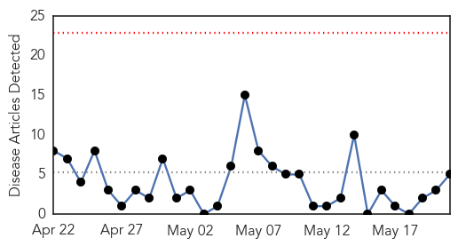
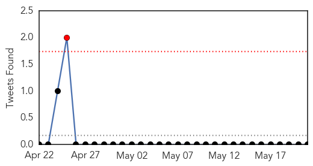
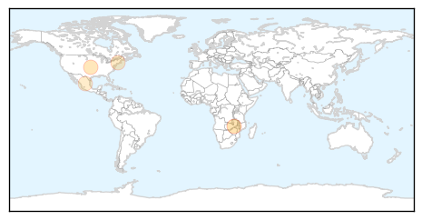
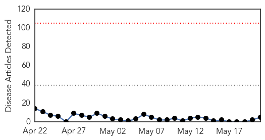
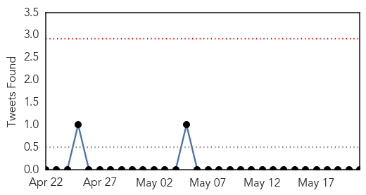

Influenza
30-Day Web Trend
0 alerts, 0 warnings

30-Day Twitter Trend
0 alerts, 0 warnings

Article Locations
Article Confidences
Top Articles:
- 0.898
- – Deteriorating Environment Threatens Human Health Worldwide
- 0.801
- Bird flu experiments risk unleashing an accidental global pandemic
- 0.682
- Protein Sciences CEO Awarded Honorary Degree for Achievements in Science and Business
- 0.617
- News in Roseville,California, Roseville, Rocklin, Auburn, Lincoln and Placer County,CA
- 0.595
- Firefighters battled electrical fire at St. Mike’s
Top Tweets:
-
No tweets found for May 21, 2014
Ebola
30-Day Web Trend
0 alerts, 0 warnings

30-Day Twitter Trend
0 alerts, 0 warnings

Article Locations

Article Confidences

Top Articles:
Top Tweets:
-
No tweets found for May 21, 2014